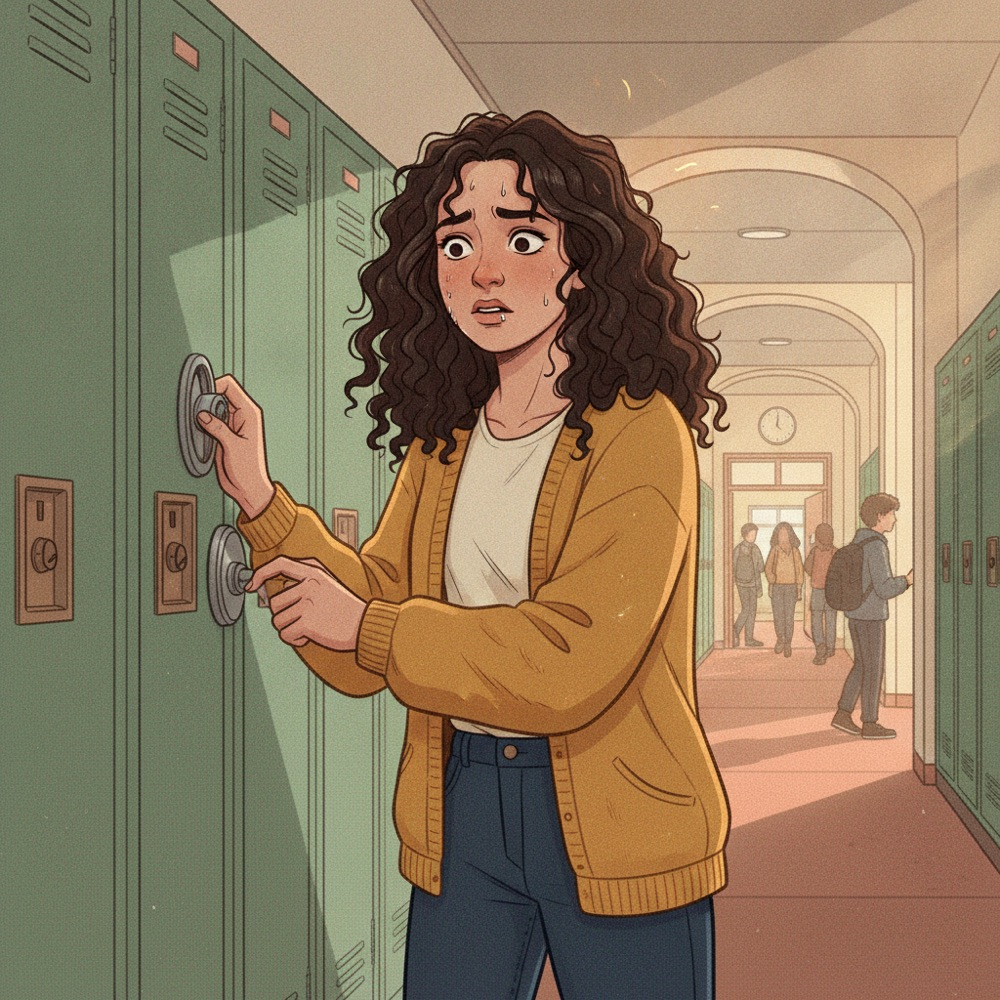

9:41
Lincoln High · Health 10
Hi, Ari


Continue · Scene 4 of 7Checking · "Just right" feelings
Lock, Check, Repeat
1/2
Stories done
9
Choices made
3
Cards saved
All stories
2 live New
New
Contamination · Washing
Clean Slate
12 min · 6 choices
57%
Checking · Re-reading
Lock, Check, Repeat
11 min · 5 choices
Intrusive thoughts
In clinician review
Worried about a friend?
3 opening lines that work